Selector Universal
El selector universal (*) selecciona todos los elementos en el documento HTML. En este caso, se utiliza para aplicar un modelo de caja consistente (box-sizing: border-box) y eliminar los márgenes y rellenos predeterminados de todos los elementos. Esto asegura que el diseño sea más predecible y uniforme en toda la página.

Codigo:

Selector de Tipo
Los selectores de tipo se utilizan para aplicar estilos a todos los elementos de un tipo específico, como body, h1, p, etc. En este caso, se han definido estilos base para el cuerpo del documento (body), encabezados (h1, h2, h3, h4) y enlaces (a). Estos estilos incluyen colores, fuentes, márgenes y otros atributos que afectan la apariencia general de estos elementos en la página.

Codigo:

Selector de Clase
Los selectores de clase permiten aplicar estilos a elementos específicos que comparten una clase común. En este caso, se han definido varias clases como .main-content, .evidence-item, .evidence-links, etc., para aplicar estilos específicos a diferentes secciones y componentes de la página. Esto permite una mayor flexibilidad y reutilización de estilos en diferentes partes del documento.
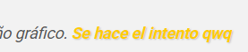
Codigo:
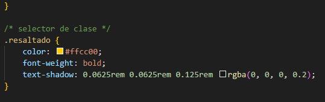
Selector de ID
Los selectores de ID se utilizan para aplicar estilos a un elemento único en el documento que tiene un atributo id específico. En este caso, se ha definido un estilo para el elemento con el ID #header, que es el encabezado principal de la página. Los estilos aplicados incluyen colores, fuentes, márgenes y otros atributos que afectan la apariencia del encabezado.
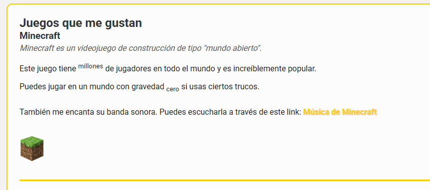
Codigo:
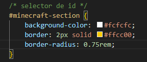
Selector de Atributo
Los selectores de atributo permiten aplicar estilos a elementos basados en la presencia o el valor de un atributo específico. En este caso, se ha definido un estilo para los enlaces (a) que tienen el atributo target="_blank". Este estilo cambia el color del enlace y agrega un subrayado cuando el usuario pasa el cursor sobre el enlace. Esto es útil para resaltar enlaces que abren en una nueva pestaña o ventana.
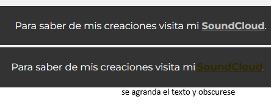
Codigo:
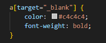
Selector de Lista
Los selectores de lista permiten aplicar estilos a elementos específicos dentro de una lista. En este caso, se ha definido un estilo para los elementos de lista (li) que son hijos directos de un elemento con la clase .evidence-links. Este estilo agrega un margen derecho a cada elemento de la lista, excepto al último, para crear espacio entre los enlaces en línea. Esto mejora la legibilidad y la apariencia visual de los enlaces en la página.
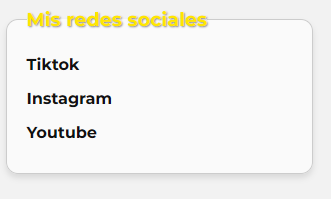
Codigo:
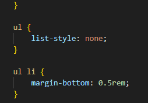
Selector de Pseudo-clase
Los selectores de pseudo-clase permiten aplicar estilos a elementos en estados específicos o condiciones. En este caso, se ha definido un estilo para los enlaces (a) cuando el usuario pasa el cursor sobre ellos (:hover). Este estilo cambia el color del enlace y agrega un subrayado para indicar que el enlace es interactivo. Esto mejora la experiencia del usuario al proporcionar retroalimentación visual cuando interactúa con los enlaces en la página.
Codigo:
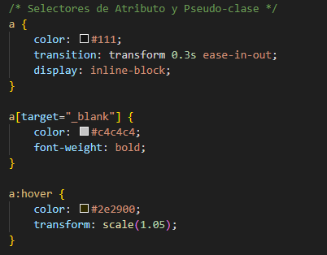
Selector de Descendiente
Los selectores de descendiente permiten aplicar estilos a elementos que son descendientes de un elemento específico. En este caso, se ha definido un estilo para los elementos de párrafo (p) que son descendientes de un elemento con la clase .main-content. Este estilo agrega un margen inferior a cada párrafo para crear espacio entre los párrafos dentro de la sección principal del contenido. Esto mejora la legibilidad y la apariencia visual del texto en la página.

Codigo:
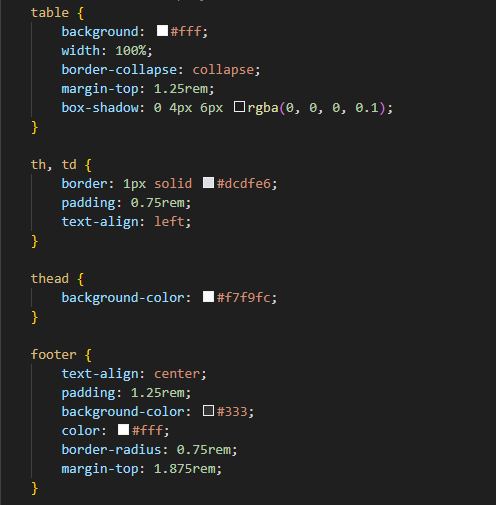
Selector de Hijo
Los selectores de hijo permiten aplicar estilos a elementos que son hijos directos de un elemento específico. En este caso, se ha definido un estilo para los elementos de lista (li) que son hijos directos de un elemento con la clase .evidence-links. Este estilo agrega un margen derecho a cada elemento de la lista, excepto al último, para crear espacio entre los enlaces en línea. Esto mejora la legibilidad y la apariencia visual de los enlaces en la página.
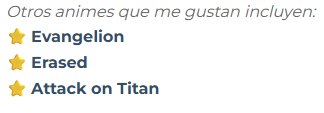
Codigo:
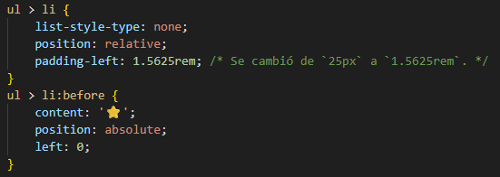
Selector de Grupo
Los selectores de grupo permiten aplicar los mismos estilos a múltiples elementos al agruparlos en una sola regla CSS. En este caso, se han agrupado los selectores de encabezados (h2, h3, h4) para aplicarles estilos comunes, como el color y la sombra de texto. Esto reduce la redundancia en el código CSS y facilita el mantenimiento, ya que cualquier cambio en los estilos de los encabezados se puede hacer en un solo lugar.

Codigo:

Selector de Hermano general
Los selectores de hermano general permiten aplicar estilos a elementos que son hermanos de un elemento específico, independientemente de su posición en el árbol DOM. En este caso, se ha definido un estilo para los elementos hr que son hermanos de un elemento con la clase .main-content. Este estilo agrega un margen vertical y un borde para separar visualmente las secciones del contenido principal. Esto mejora la organización y la apariencia visual de la página.
Codigo:
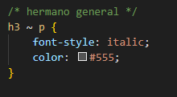